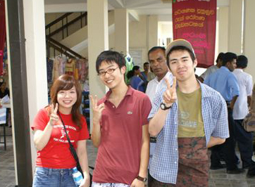
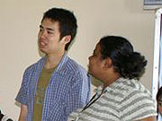

 ピース☆ |
 WTI研修生発表会にて！ |
「この留学プログラムを利用する際に特に不安はありませんでした。
値段の安さで、参加を決めました。
現地の方がキチンと対応してくれたのでとても快適でした。
英語のレッスンは、先生の発音がブリティッシュだったので初めは戸惑いましたが慣れたらどうということはありませんでした。
宿題は日本と比べるととても楽で観光などの時間を削ることもありませんでした。
ホームステイは、とてもスリランカの生活というものがわかり良かったです。
ホストファミリーの方もとても親切で良かったです。
もう少し日本の文化を見せられるようなものを持っていけばよかったと思います。
低開発村視察に行った際にワヤンバ職業訓練校の指導者の方がとてもわかりやすく説明してくれました。
ただもう少し奥地の低開発村まで行って見たいと思いました。
スリランカという国は、少し怖いイメージがあったのですが向こうの現地の方もとても親切でスリランカに対する印象がガラリと変わりました。
行ってみて感じたのは「のんびりとしたとても良い雰囲気の国」というイメージです。
色々忙しい中スリランカに行ったのですが、のんびりとした現地の雰囲気と現地の住民が親切なこともあり、とてもゆったりと出来ました。
日本では感じられないことを感じることも出来てとても良かったです。
また、スリランカへ行く際は、この留学プログラムを是非利用したいです。